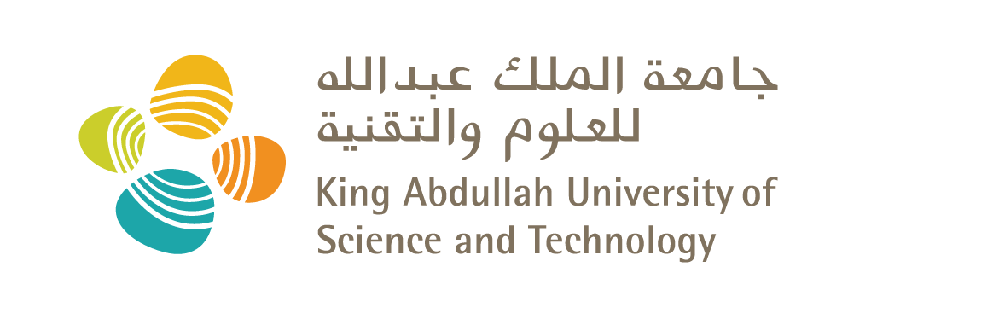

Xinliang Liu
Postdoctoral Fellow | Extreme Computing Research Center (ECRC)
Postdoctoral Fellow | Extreme Computing Research Center (ECRC)
I am currently a Postdoctoral Fellow at the Extreme Computing Research Center (ECRC) at King Abdullah University of Science and Technology (KAUST), working with Prof. Jinchao Xu since 2022. I am excited to announce that I will be joining the School of Mathematical Sciences at Ocean University of China as an Associate Professor soon.
I received my Ph.D. in Applied Mathematics from Shanghai Jiao Tong University in 2021, supervised by Prof. Lei Zhang. During my Ph.D., I was fortunate to spend time as a Visiting Scholar at the California Institute of Technology (Caltech), hosted by Prof. Houman Owhadi (2019-2020). Prior to my doctoral studies, I obtained my Master of Science in Applied Mathematics (2017) from Shanghai Jiao Tong University and my Bachelor of Science in Information and Computing Science (2012) from Ningbo University.
My research focuses on developing efficient numerical methods and machine learning models for scientific computing problems, particularly those involving multiscale phenomena or described by partial differential equations (PDEs). Key areas include:
My work has been published in leading journals and conferences such as the Journal of Computational Physics (JCP), SIAM Multiscale Modeling & Simulation (MMS), NeurIPS, and ICLR.
This section can showcase key projects, software, or code repositories.
Xinliang Liu
Extreme Computing Research Center (ECRC)
King Abdullah University of Science and Technology (KAUST)
Thuwal 23955-6900, Saudi Arabia
Email: xinliang.liu@kaust.edu.sa